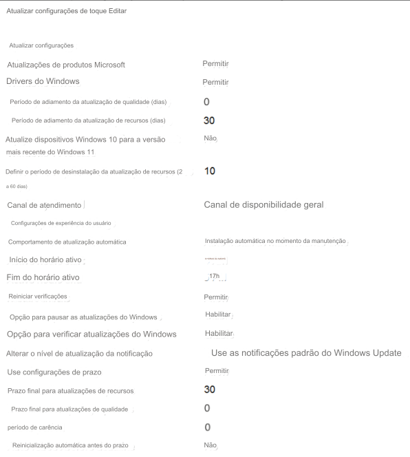
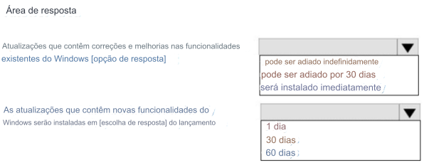

17- HOTSPOT –
Você tem uma assinatura do Microsoft 365 E5.
Você
cria uma nova política de anéis de atualização chamada Policy1, conforme mostrado na exposição a seguir.

Use os menus suspensos para selecionar a opção de resposta que completa cada afirmação com base
nas informações apresentadas no gráfico.
NOTA: Cada seleção correta vale um ponto.
